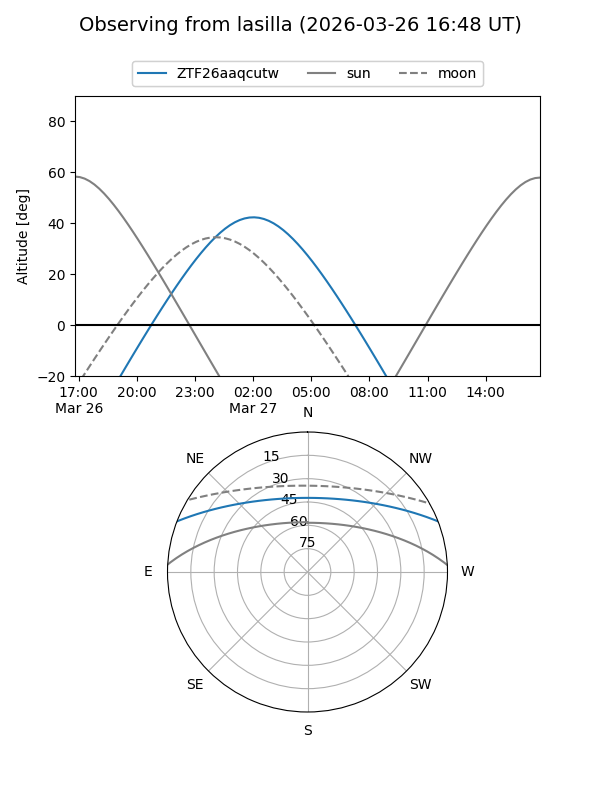
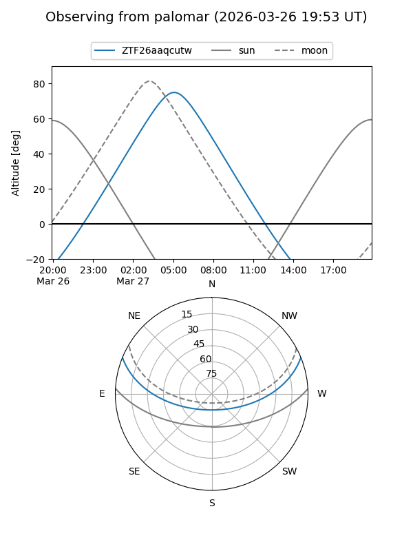

ZTF26aaqcutw
Target ZTF26aaqcutw at 2026-03-27 05:47
Aliases and brokers:
FINK: link
Lasair: link
ALeRCE: link
alt names
ZTF26aaqcutw (ztf,fink_ztf)
Coordinates:
equatorial (ra, dec) = 143.5450,+18.51476
equatorial (HMS+DMS) = 09:34:10.80,+18:30:53.13
galactic (l, b) = (212.8729,+44.02379)
Flags:
Photometry:
last ztfg=16.88
1 ztfg detections
Lightcurve
Visibility


Additional plots